CERTIFICATION
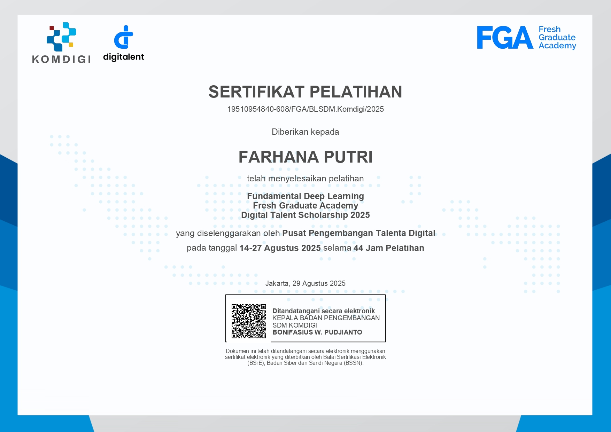
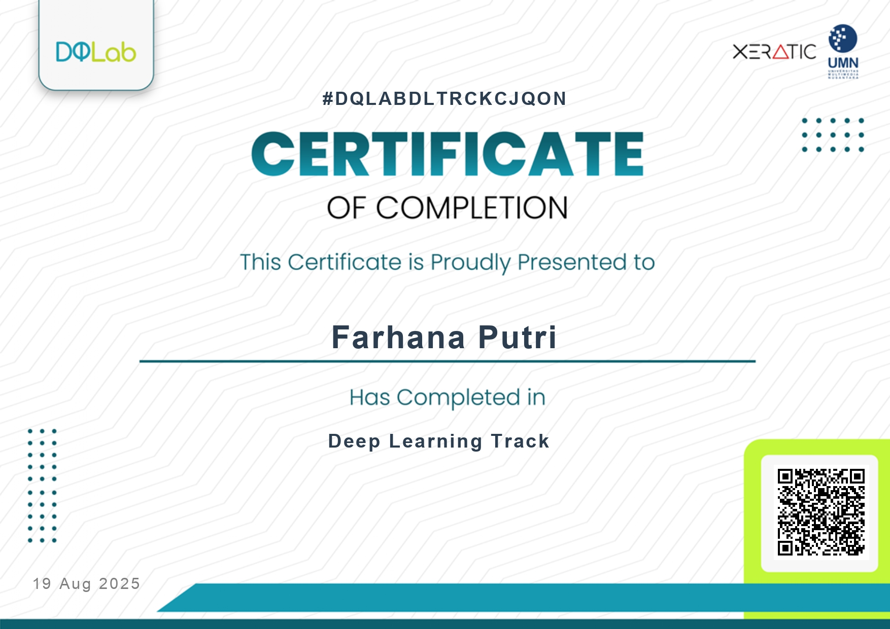
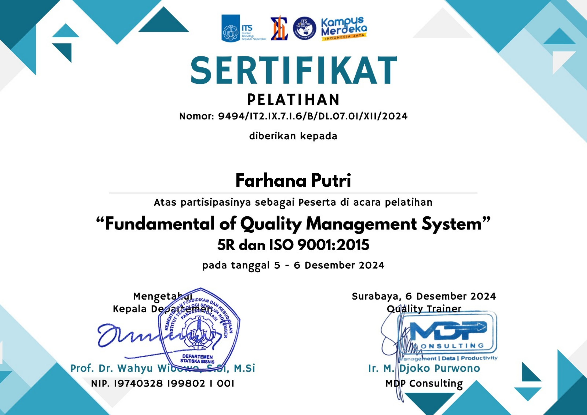
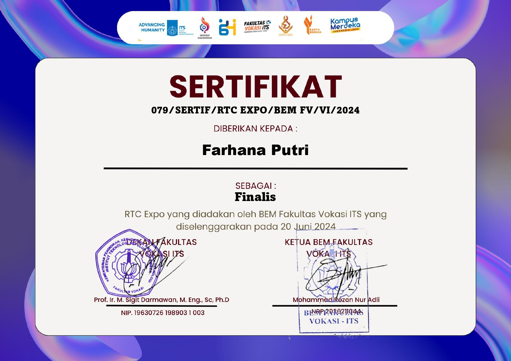
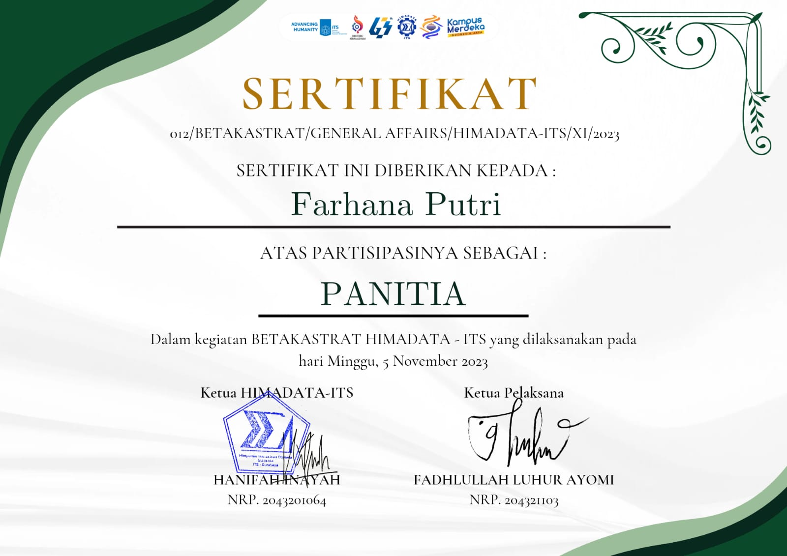
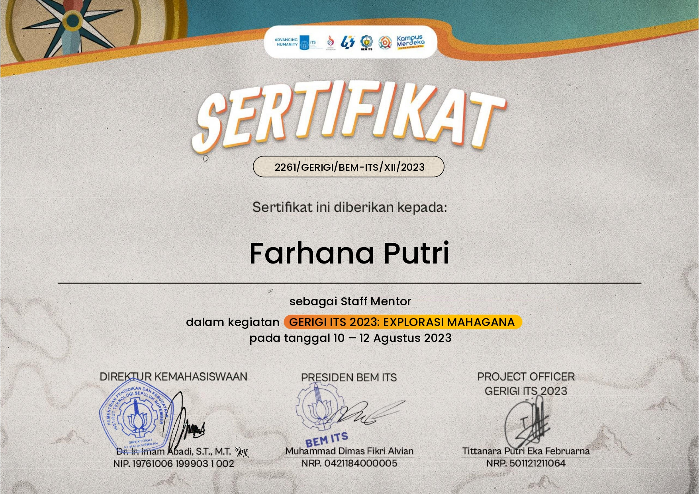

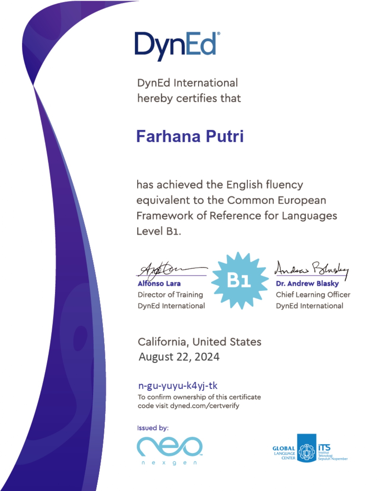
A business statistics graduate with expertise in statistics, social, & business research. Eager to apply analytical skills to solve real–world problems & support data–driven decisions.
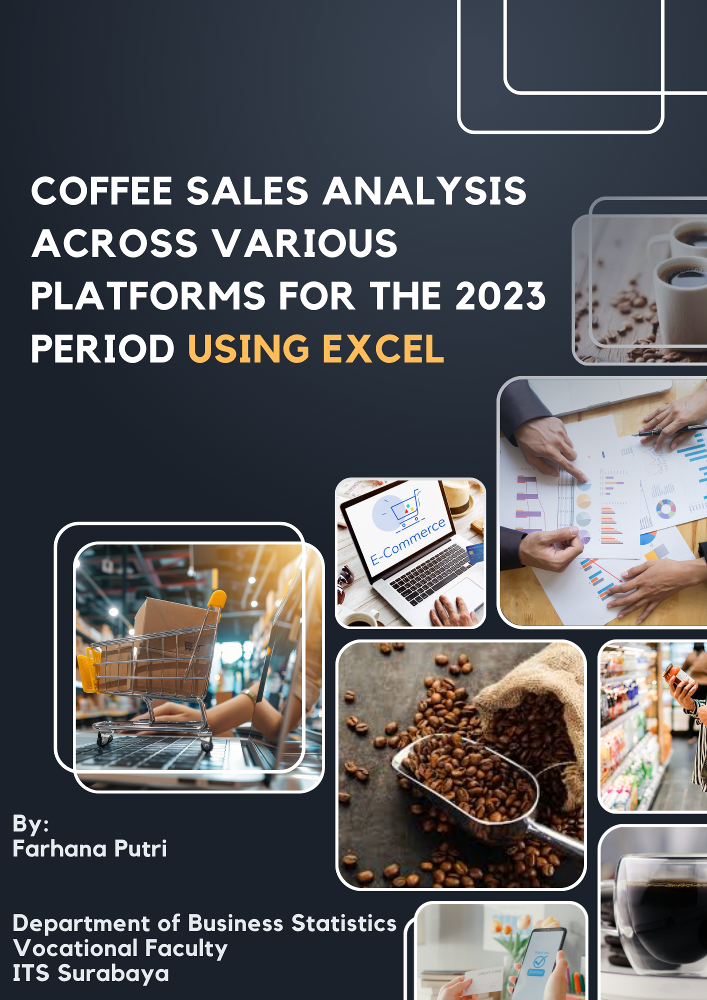
The project involved data cleaning, applying Excel functions, building Pivot Tables, & developing an interactive dashboard.
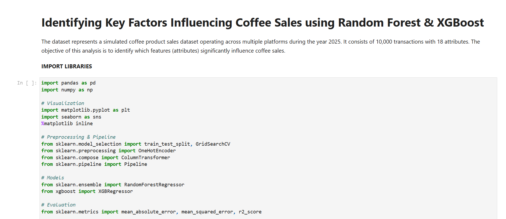
Identify the features that most influence net sales to optimize inventory & promotion strategies.
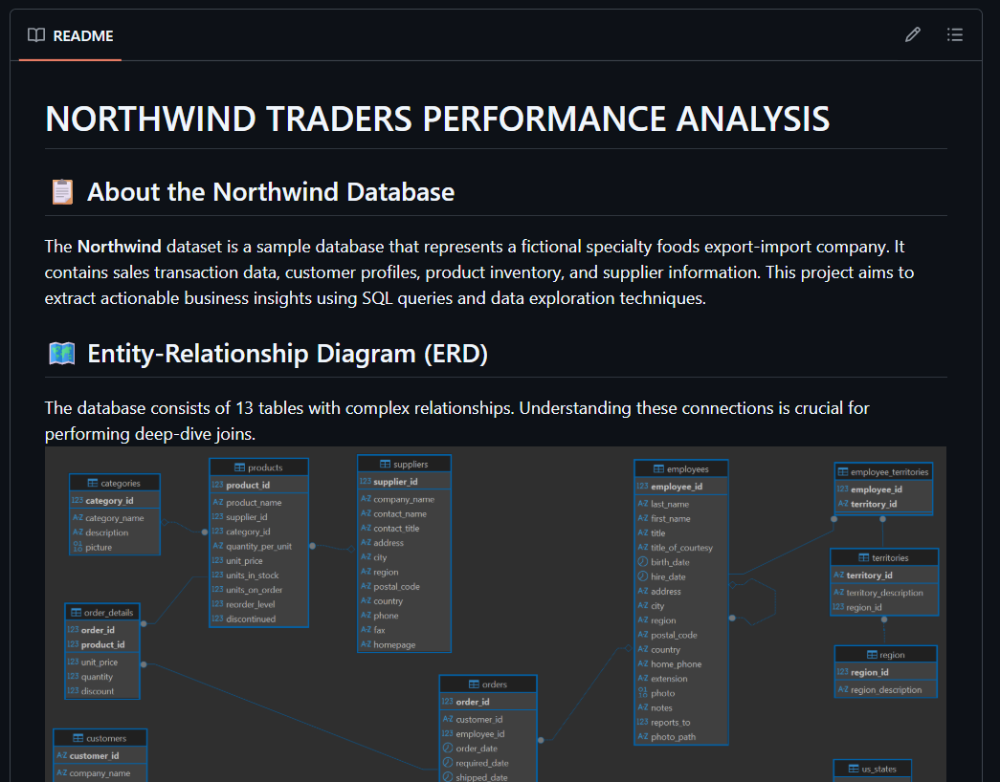
Performed SQL analysis on the Northwind dataset to explore sales performance, customer insights, & product trends.
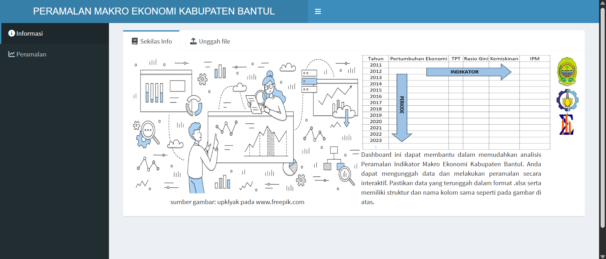
Select variables, forecasting methods, & projection periods. The system generates projected trends, MAPE accuracy scores, & forecast values dynamically.
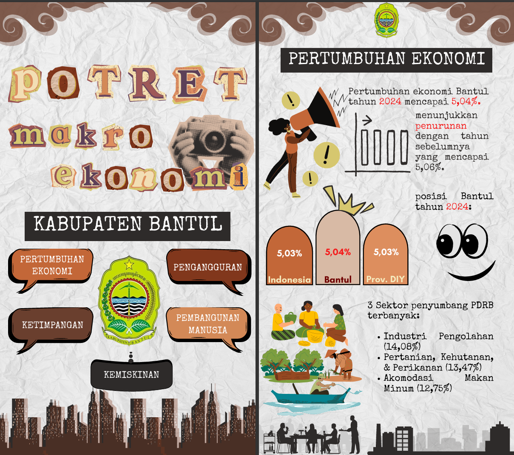
Produced a data visualization video presenting key macroeconomic indicators of Bantul Regency.
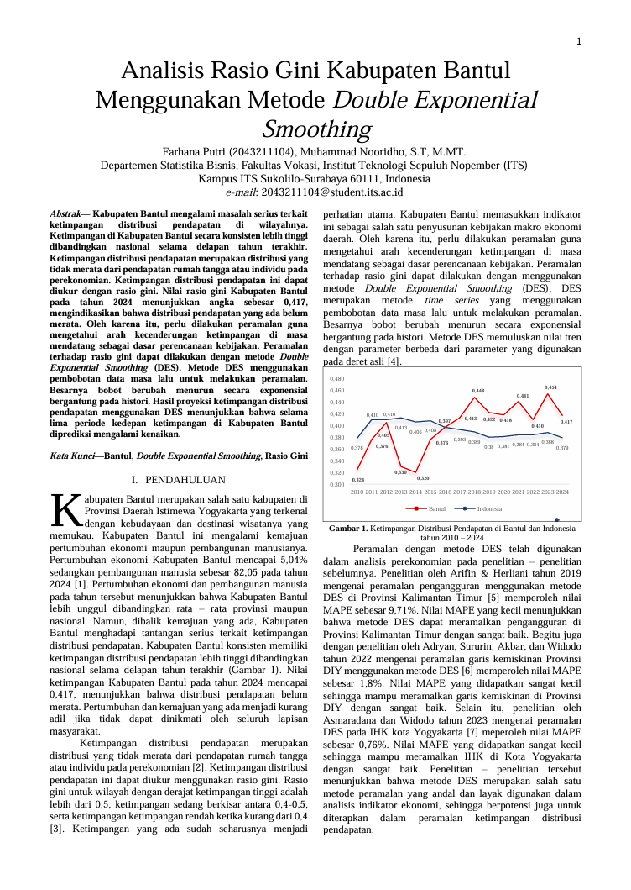
Predicted income inequality trends in Bantul Regency with 5-year projection (MAPE = 7.56%).
Verified regional development data and supported macroeconomic reports. Assisted administrative tasks including documentation and meeting records.
Conducted customer satisfaction analysis using IPA & CSI methods to generate actionable insights for service improvement.
Guided 17 new students during orientation and supported event coordination to ensure smooth program execution.
Contributed to research-based programs and supported event planning through teamwork and coordination.







Feel free to explore my portfolio & reach out to me 👇